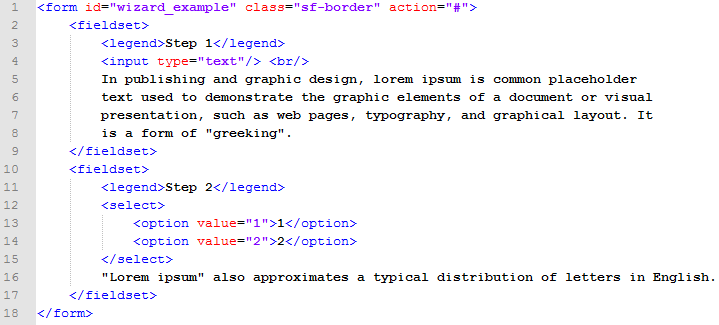

Created: 9/9/2014
By: Ajoke
Email: ajoke3@gmail.com
Thank you for purchasing my jQuery plugin. If you have any questions that are beyond the scope of this help file, please feel free to email via my user page contact form here. Thanks so much!
Plugin generates responsive HTML code. This generated code can be described as two blocks. One for step navigation and second for content.
Your code must have certain structure, so that plugin can create step navigation from your code. Important is tag <form> and this tag must have direct children tags <fieldset>. These fieldsets will be turned in to the navigation steps. Each fieldset should contain tag <label> that will be a name of navigation step.

I'm using one CSS file for this plugin. This css file contains specific styling for layout and four themes of plugin.
You can overwrite these styles. If you use ID in styles, you can be sure, that you overwrite
default styles. Important thing is media queries, this help you with responsive look, but you must set max-width and min-width
depending on your css framework or your media queries in your site styles.
Additional scss file is attached For easy color change or modification original themes (you can use some online compiler for generate css).
This plugin imports three Javascript files.
The easiest way to call plugin is:
$("#wizard").stepFormWizard();
Where #wizard is ID of some form element with fieldsets.
If you need to change some options, you will call plugin like this:
$("#wizard").stepFormWizard({
showNav: 'left',
height: '300px'
});
For more options look here offline or ajoke.cz/wizard online
For more examples view offline:
example 1
example 2
example 3
example 4
example 5
online: ajoke.cz/wizard
Once again, thank you so much for purchasing this jQuery plugin. As I said at the beginning, I'd be glad to help you if you have any questions relating to this plugin. No guarantees, but I'll do my best to assist. If you have a more general question relating to the plugin on CodeCanyon, you might consider visiting the forums and asking your question in the "Item Discussion" section.
Ajoke